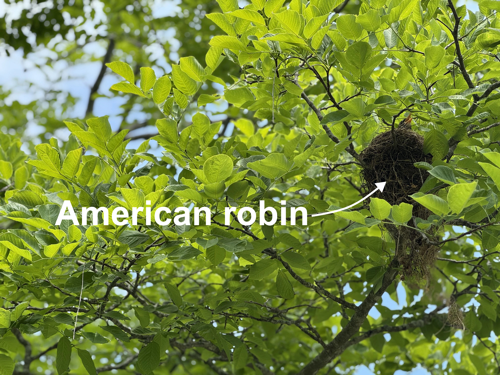
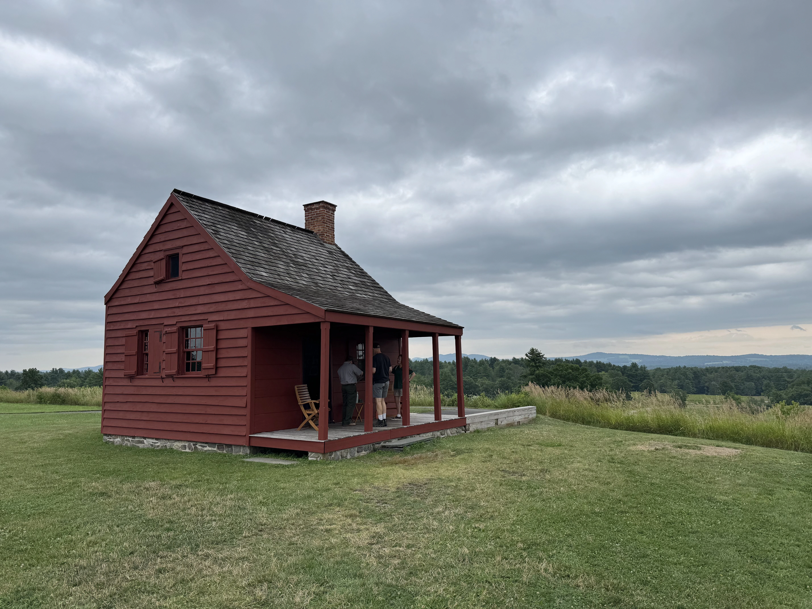

Map of Adams National Historical Park (outlined in hot pink).
On July 4, 2026, America will celebrate its 250th anniversary. To commemorate, I’m traveling to a variety of National Historical Parks that preserve the places, stories, and landscapes connected to the American Revolution (for the most part). Along the way, I’ll explore the history behind these important sites, share what I discover, and experience firsthand the places where the story of America began.
Adams National Historical Park
Where better to begin than the Adams National Historical Park (Adams Park for short). The park sits on roughly 14 acres and preserves several historic sites associated with the Adams family, including the Adams Farm at Penn’s Hill (birthplaces of John Adams and John Quincy Adams), the Old House at Peace field, and the Stone Library. The “Old House” served as the Adams family home from 1720 to 1927 before being transferred to the National Park Service in 1946, with the mission to “foster civic virtue and patriotism”. Equally remarkable is the Stone Library, completed in 1873 by Charles Francis Adams, son of President John Quincy Adams. Among its extraordinary collection is the Mendi Bible, presented to John Quincy Adams in recognition of his role in the landmark Amistad case, which he successfully argued before the U.S. Supreme Court in 1841. Together, these places offer a fascinating glimpse into the lives, ideas, and enduring legacy of one of America’s most influential families.

John Adams was an instrumental leader during the American Revolution. He served as a Massachusetts delegate to the Continental Congress and was a strong advocate for independence, helping draft and promote the Declaration of Independence in 1776. In 1777, Congress appointed Adams to serve as a commissioner in France, where he worked to secure financial and military support for the American cause. He returned to Massachusetts in 1778 and, in 1779, drafted the Massachusetts Constitution, which was adopted in 1780 and influenced the development of the U.S. Constitution. Adams subsequently returned to Europe, where he pursued American diplomatic and financial interests in France and the Netherlands. He was one of the American negotiators who helped secure the Treaty of Paris in 1783, formally ending the Revolutionary War. After the war, Adams served as the first U.S. minister to Great Britain.
A couple of interesting tidbits we learned during our visit: Supposedly, John Adams started each morning with a tankard of hard cider. And John Quincy Adams was fascinated by oak trees. In fact, some of the oaks he planted at Peacefield are still alive today, a remarkable living connection to the Adams family.
Saratoga National Historical Park
Next stop was Saratoga National Historical Park. The park encompasses roughly 3,584 acres and preserves several historic sites associated with the Battles of Saratoga. A must is the 10-mile tour road, which winds through the battlefield and stops at significant sites along the way. I’d also recommend using the park’s audio tour to accompany the drive, it adds helpful historical context.
Map of Saratoga National Historical Park (outlined in hot pink).

Saratoga was a turning point in the Revolutionary War. It was here, in the autumn of 1777, that American forces met, defeated, and ultimately forced a major British army to surrender. This was a crucial victory for the Americans, demonstrating that the Continental Army could defeat a major British force. Burgoyne’s surrender had major diplomatic consequences, most importantly helping to convince France to recognize and support the American cause for independence.
Fort Moultrie National Historical Park
Fort Moultrie National Historical Park encompasses roughly 103 acres and preserves the site of the fort on Sullivan’s Island that was famously constructed from palmetto logs and sand. On June 28, 1776, Colonel William Moultrie and his American defenders repelled a British naval attack led by Commodore Sir Peter Parker (not Spider Man). The American victory was an important early success in the Revolutionary War, but the British returned, learned from their early mistakes and captured Charleston in 1780.
Map of Fort Moultrie National Historical Park (outlined in hot pink).
During the Revolutionary War, Fort Moultrie successfully defended Charleston Harbor despite doubts from other American commanders. General Charles Lee famously described the fort as a “slaughter pen” when he inspected it before the battle, believing its defenders had no viable line of retreat. But the ragtag group of American soldiers held their ground, turning back the British fleet and securing a remarkable victory.
Other National Historical Parks
I’ve been to several other National Historical Parks, just not in 2026 :( I decided to still list them here, because they’re still worth visiting!
Boston National Historical Park
Map of Boston National Historical Park (outlined in hot pink).
Independence National Historical Park
Map of Independence National Historical Park (outlined in hot pink).
New Bedford Whaling National Historical Park
Map of New Bedford Whaling National Historical Park (outlined in hot pink).